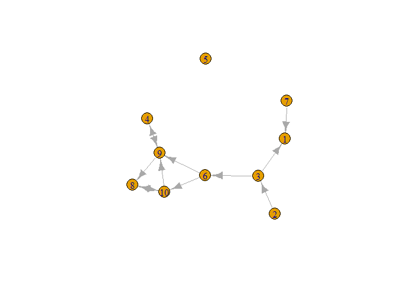

The goal of RsienaTwoStep is to provide a method to asses the extent to which results obtained by RSiena::siena07() depend on the validity of the ministep assumption.
A crucial assumption of the SAOM as implemented in RSiena is the ministep: only one actor at the time is allowed to make one tie-change. This package aims to provide a method to asses the extent to which results obtained by RSiena hinge on this crucial ministep assumption. It does so by simulating the evolution of networks by allowing twosteps - two actors are allowed to make one tie-change simultaneously - and by allowing simsteps - one actor is allowed to make two tie-changes simultaneously.
1.1. Twostep
Depending on the precise implementation of the twostep procedure, allowing for twosteps can be interpreted simply as:
- allowing for simultaneity: when two actors are picked at random to simultaneously make a ministep;
- allowing for weak coordination: two actors are picked at random to simultaneously make a ministep but only specific possible future networks are regarded as the result of coordination and included in the choice set of the two actors;
- allowing for strict coordination: only actors are sampled to make a twostep who are connected at time1.
1.2. Simstep
Allowing for simsteps can be interpreted as:
- allowing for simultaneity: one actor simply can make two ties at the same tie;
- allowing for strategic action: if we see the ‘simultaneously’ created ties as sequential ties, an actor may create one tie (not necessarily positively evaluated by itself) to ensure that a highly positively evaluated second tie can created next.
2. Installation
You can install the development version of RsienaTwoStep from GitHub with:
# install.packages("devtools")
devtools::install_github("JochemTolsma/RsienaTwoStep", build_vignettes=TRUE)2.1. Website and Vignettes
Make sure to check out the package website or browse the vignettes:
browseVignettes("RsienaTwoStep")3. Examples
ABM-ministep, ABM-twostep and ABM-ministep simulations on toy data
library(RsienaTwoStep)
#> Loading required package: foreach3.1. Our network
net1g <- igraph::graph_from_adjacency_matrix(net1, mode="directed")
plot(net1g)
3.2. setting up cluster
This is of course not necessary but will make the simulations a lot faster.
library(doParallel)
#> Loading required package: iterators
#> Loading required package: parallel
#stopCluster(my.cluster)
n.cores <- parallel::detectCores() - 1 #save one core for other work
# create the cluster
my.cluster <- parallel::makeCluster(n.cores, type = "PSOCK")
# register it to be used by %dopar%
doParallel::registerDoParallel(cl = my.cluster)3.3. Degree and reciprocity
Let us assume people really don’t like to have a non-reciprocal tie but do like reciprocal ties a lot. (I only want to help you if you help me!)
Thus if you start with a network without many (reciprocal) ties it would be very difficult to get more reciprocal ties in the normal ministep model. However, with simultaneity this should be possible.
3.3.1. Simulate networks
We can now simulate network given different assumptions with respect to tie-changes. Below we simulate according to the traditional ministep assumption, a twostep assumption and a simstep assumption.
sims1 <- ts_sims(nsims=1000, parallel=TRUE, net=net1, rate=10, statistics=list(ts_degree, ts_recip), parameters=c(-1,2), p2step=c(1,0,0), chain=FALSE) #ministep only (one actor can make one tie change)
sims2 <- ts_sims(nsims=1000, parallel=TRUE, net=net1, rate=10, statistics=list(ts_degree, ts_recip), parameters=c(-1,2), p2step=c(0,1,0), chain=FALSE) #twostep-simultaneity (two random actors can make one tie change simultaneously)
sims3 <- ts_sims(nsims=1000, parallel=TRUE, net=net1, rate=10, statistics=list(ts_degree, ts_recip), parameters=c(-1,2), p2step=c(0,0,1), chain=FALSE) #simstep (one actor can make two tie changes simultaneously)3.3.2. Network census
The package RsienaTwoStep has build in functions for a dyad census and a triad census. Let us compare the dyad census of our simulated networks.
3.3.3. Plot dyadcensus
library(ggplot2)
# combine datasets
df <- rbind(df_s1, df_s2, df_s3)
p <- ggplot(df, aes(x=x, y=y, fill=factor(type, levels=c("ministep", "twostep-simultaneity", "simstep")))) +
geom_violin(position=position_dodge(.8)) +
stat_summary(fun = mean,
geom = "errorbar",
fun.max = function(x) mean(x) + sd(x),
fun.min = function(x) mean(x) - sd(x),
width=.1,
color="red", position=position_dodge(.8)) +
stat_summary(fun = mean,
geom = "point",
color="red", position=position_dodge(.8)) +
labs(x = "dyad type", y = "dyad count", fill="simulation type")
p
4. Conclusion
- If two actors are allowed to change their ties simultaneously, this will lead to more reciprocal ties than when actors have to make a tie-change one after each other. The final network is thus also more dense if we assume a twostep process compared to a ministep process.
- For this network and given only degree and reciprocity as relevant network statistics, the ministep and simstep model lead to similar results.